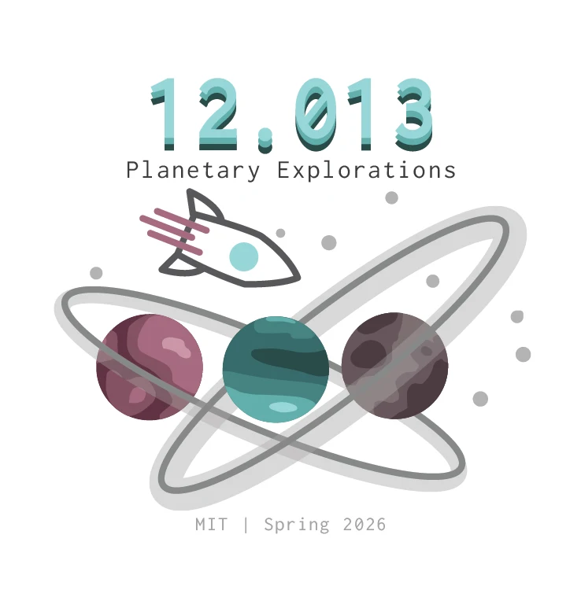
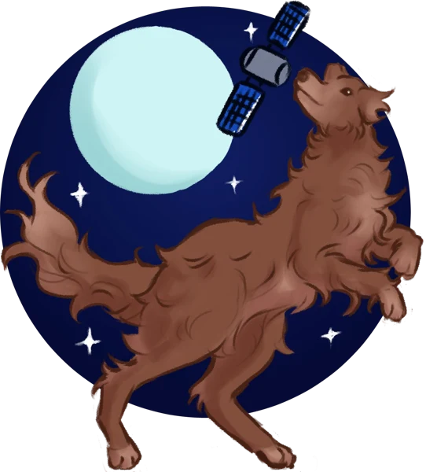
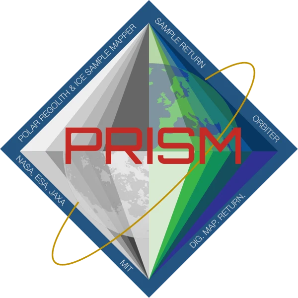

Engagement
Teaching
12.421 Physical Principles of Remote Sensing
Fall 2026
Introduction to the physics of remote sensing, with applications to the study of Earth, the Moon, and other planets and solar system bodies, as well as to emerging industrial applications. Covers the physical principles of optical, thermal, radar, and lidar remote sensing with an emphasis on the fundamental properties of electromagnetic waves; the principles of electromagnetic scattering from real and idealized materials, including various types of surfaces and vegetation; the interaction of electromagnetic radiation with the atmosphere; and thermal and microwave emission from various media. Discusses remote sensing platforms along with the essentials of orbital mechanics and data processing methods and tools.
12.013 Planetary Explorations
Spring 2026
A tour of the solar system, from the scorched surface of Mercury to the icy nuclei of the outermost comets. Students explore the geology, interiors, atmosphere, and long-term evolution of planets, moons, and small bodies across the solar system. Students work directly with cutting-edge planetary datasets and techniques, including spacecraft imagery, spectra, topographic data, crater counts, meteorite samples, and atmospheric experiments. Culminates in an individual hypothesis-driven mission proposal in which students design a scientific exploration strategy for a solar system target of their choosing.



Class logo and logos from student mission proposals: ARGUS (Uranus) and PRISM (lunar polar sample return).
12.S593 Exploring Solar System Surfaces
Fall 2025
Organized lecture or laboratory subject on an aspect of the earth sciences, planetary sciences, or astronomy not normally covered in regularly scheduled subjects.
12.002 Introduction to Geophysics and Planetary Science
Spring 2023, 2024, 2025
Study of the structure, composition, and physical processes governing the terrestrial planets, including their formation and basic orbital properties. Topics include plate tectonics, earthquakes, seismic waves, rheology, impact cratering, gravity and magnetic fields, heat flux, thermal structure, mantle convection, deep interiors, planetary magnetism, and core dynamics. Suitable for majors and non-majors seeking general background in geophysics and planetary structure.
Sample of an online class on planetary moments of inertia for 12.002.
Outreach
News video on our work published in Nature on lake outflows.
5 minute flash talk for an interview on my research.
MIT Alumni Forum talk on decoding the mystery of water on Mars, 2025.
In the media
Here you can find the latest, major news articles and other media about our research. Click the button to read more!
2022


2021


2020

“A blue ‘Red Planet’? Rain and snow storms may have soaked the Martian surface, say scientists”
by Jamie Carter

“"Rivers used to flow and it rained on Mars" (Translated from Russian)”
by Sergei Dogotar and Alexey Gorbachev